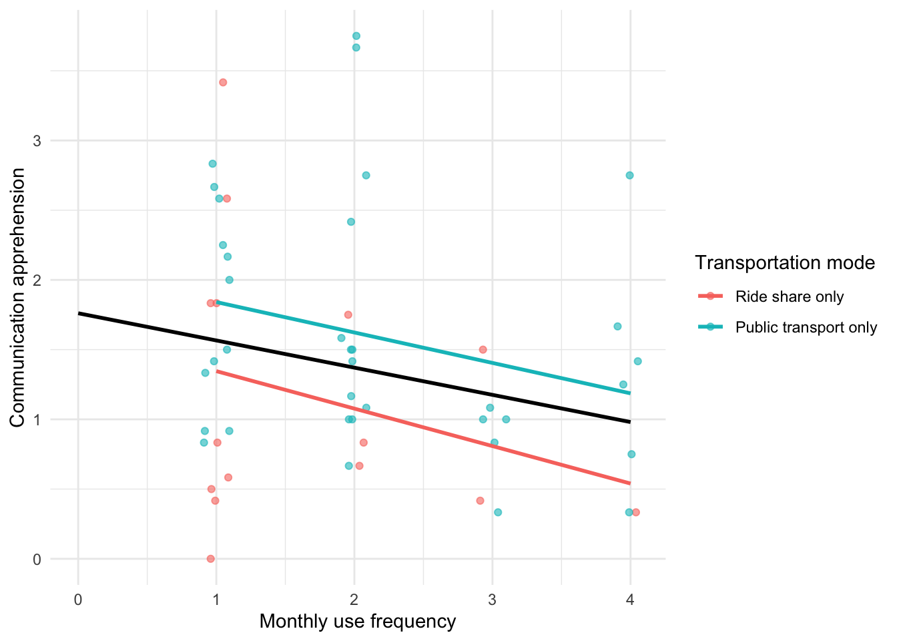
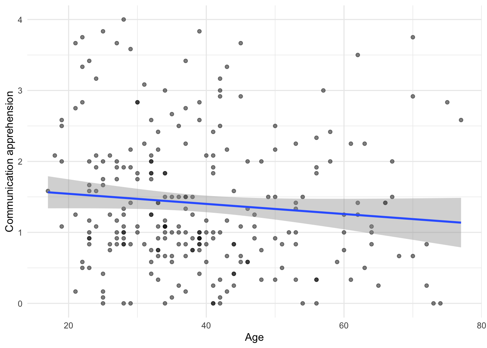
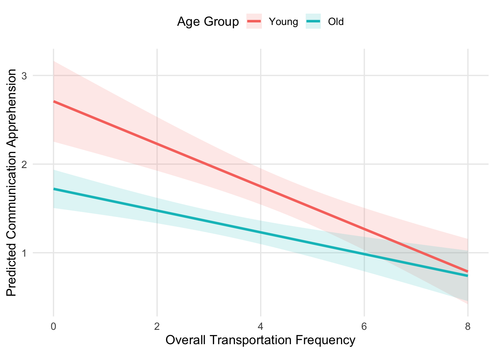
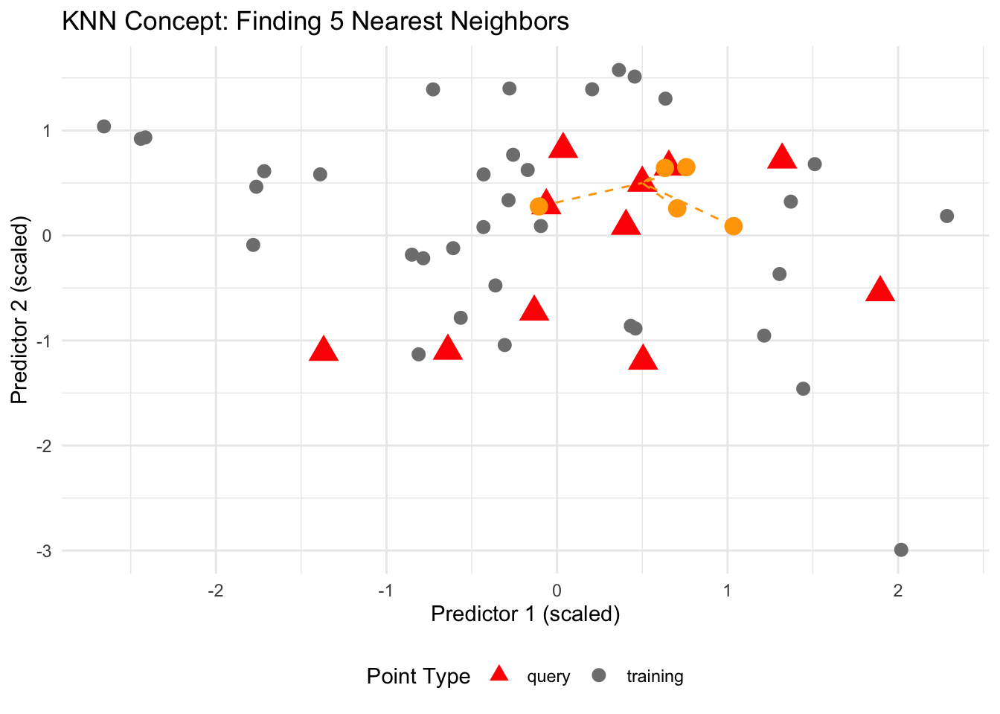
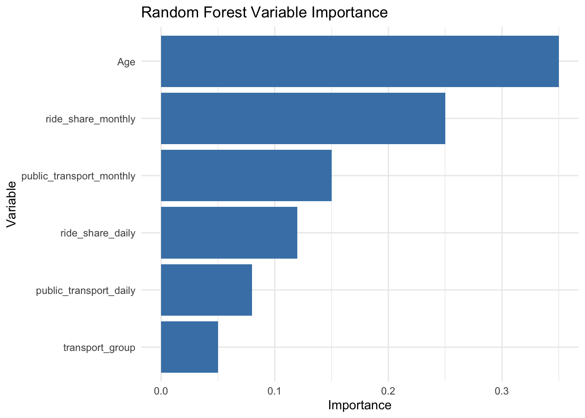
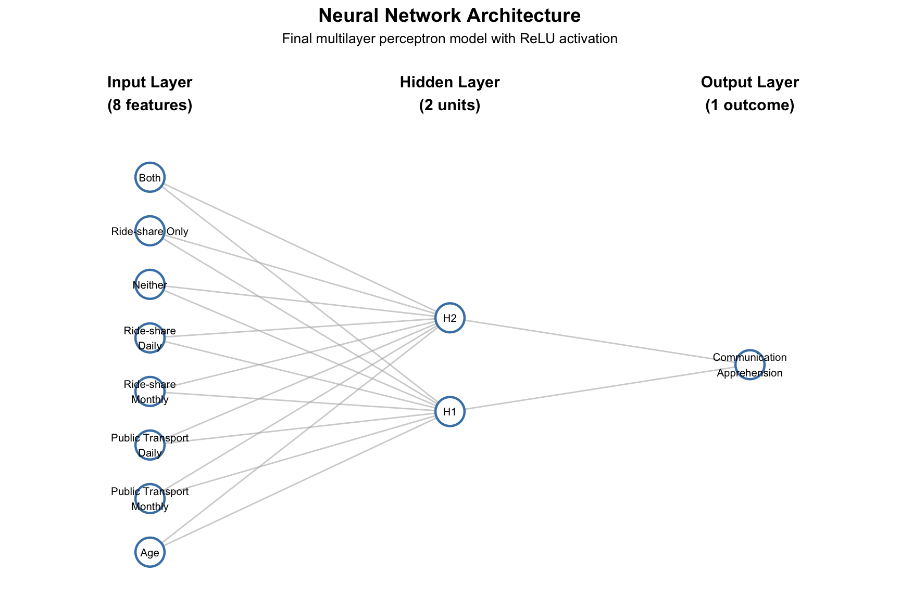
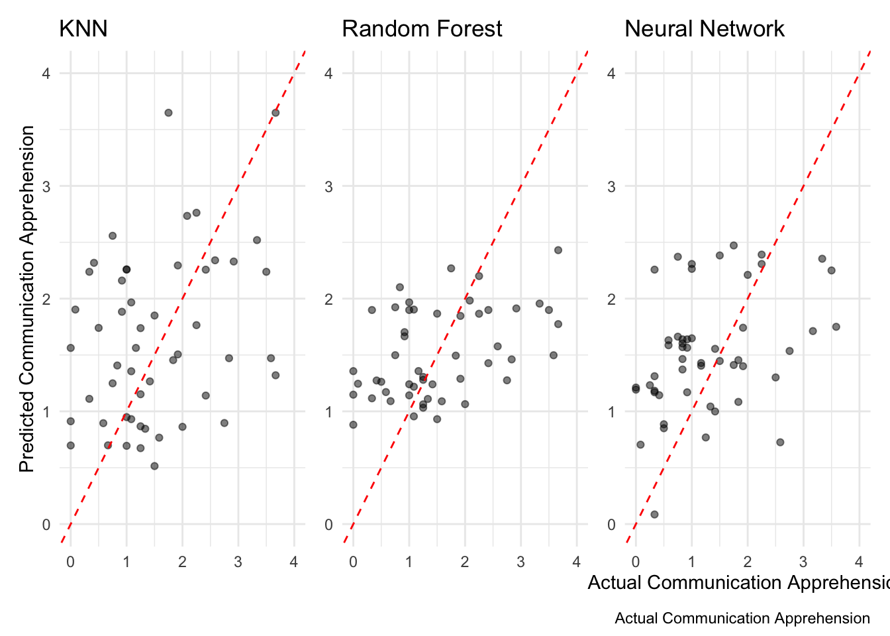

| Transportation group | Mean communication apprehension per Question | N |
|---|---|---|
| Neither | 2.11 | 36 |
| Ride share only | 1.17 | 15 |
| Public transport only | 1.59 | 36 |
| Both | 1.23 | 165 |
Transportation Habits, Age, and Communication Apprehension
1 Introduction
Communication apprehension—the fear or anxiety associated with real or anticipated communication with others—has been studied extensively in relation to various individual differences and contextual factors. This study examines whether transportation habits and age are associated with communication apprehension. Specifically, we investigate whether individuals who use different modes of transportation (ride-share services vs. public transportation) differ in their communication apprehension levels, and whether age predicts communication apprehension. Understanding these relationships may provide insights into how daily behaviors and demographic characteristics relate to communication patterns.
2 Data Preparation
2.1 Data Collection and Merging
Data were collected from participants who completed a survey assessing communication apprehension and transportation habits. The original data were stored in three separate files: PRCAProlificExport_FileA.csv, PRCAProlificExport_FileB.csv, and PRCAQualtricsExport_FileC.csv. The two Prolific files (FileA and FileB) contained participant demographic information including age, sex, country of residence, student status, and employment status. The Qualtrics file (FileC) contained survey responses including communication apprehension questions and transportation usage patterns.
The data cleaning process involved several steps. First, the two Prolific files were concatenated using Python’s pandas library, resulting in a combined dataset with duplicate participant IDs removed (keeping the first occurrence). This yielded 252 unique participants. The combined Prolific data were then merged with the Qualtrics data by matching the Q0 column in the Qualtrics file with the Participant id column in the Prolific file. This merge was performed using a left join, and rows without matches (n = 31) were filtered out, resulting in a final dataset of 252 participants with complete demographic and survey data.
2.2 Variable Coding and Creation
After merging, the survey responses required coding to create numeric variables for analysis. Likert-scale responses to communication apprehension questions were reverse-coded where appropriate. Questions Q1, Q3, Q5, Q13, Q15, and Q18 were normally coded (Strongly disagree = 0, Somewhat disagree = 1, Neither agree nor disagree = 2, Somewhat agree = 3, Strongly agree = 4), while questions Q2, Q4, Q6, Q14, Q16, and Q17 were reverse-coded (Strongly disagree = 4, Somewhat disagree = 3, Neither agree nor disagree = 2, Somewhat agree = 1, Strongly agree = 0).
Reverse coding was necessary because some survey items were phrased in the opposite direction. For example, Q1 asks “I dislike participating in group discussions” (normal coded), where agreement indicates higher communication apprehension. In contrast, Q2 asks “Generally, I am comfortable while participating in group discussions” (reverse coded), where agreement indicates lower communication apprehension. Without reverse coding, these items would be scored in opposite directions, leading to inconsistent measurement. By reverse-coding Q2 (and similar items), we ensure that higher scores consistently represent higher communication apprehension across all items.
Transportation usage variables were created from survey questions Q26 (public transportation) and Q28 (ride-share). Binary variables indicated whether participants used each mode (Never = 0, any use = 1). Frequency variables were created with ordinal coding: Never = 0, 0-1 days a month = 1, 2-4 days a month = 2, 4-8 days a month = 3, 8 or more days a month = 4. Daily frequency variables were similarly coded for typical daily usage patterns.
A composite communication apprehension score was calculated by summing responses to the 12 communication apprehension questions (Q1-Q6 and Q13-Q18) and dividing by 5, resulting in a score representing average communication apprehension per question. Finally, a minimal dataset was created containing only the essential variables for analysis: participant ID, age, sex, transportation usage variables, and the communication apprehension score.
3 Transportation Habits and Communication Apprehension
3.1 Transportation Mode Differences
We first examined whether communication apprehension differed based on transportation mode usage. Participants were categorized into four groups based on their transportation habits: those who used neither ride-share nor public transportation, those who used only public transportation, those who used only ride-share, and those who used both modes.
As shown in Table 1, ride-share-only users had the lowest average communication apprehension scores (1.17), followed by those who used both modes (1.23), public transportation-only users (1.59), and those who used neither mode (2.11). This pattern suggests that transportation mode is associated with communication apprehension, with ride-share users showing particularly low levels.
3.2 Transportation Frequency Effects
Beyond simple mode usage, we examined whether the frequency of transportation use was associated with communication apprehension. We conducted a linear regression analysis including both ride-share frequency and public transportation frequency as predictors of communication apprehension.
The analysis revealed that each one-category increase in ride-share frequency was associated with an average 0.23-point decrease in communication apprehension, accounting for public-transport frequency, b = −0.23, SE = 0.05, t(249) = −4.28, p < .001. In contrast, each one-category increase in public-transport frequency was associated with an estimated 0.05-point decrease in communication apprehension after accounting for ride-share frequency; however, this association was not statistically significant, b = −0.05, SE = 0.05, t(249) = −1.00, p = .318.

Figure 1 helps visualize this pattern: the black line shows the overall negative relationship between transportation-use frequency and communication apprehension, while the colored lines show the trends among ride-share-only and public-transportation-only users. The ride-share group shows a more pronounced decrease in communication apprehension as frequency increases, while the trend among public-transportation-only users is weaker.
Additional analysis using ANOVA confirmed that communication apprehension differed significantly across rideshare frequency groups, F(4, 255) = 9.31, p < .001, with Tukey post-hoc tests showing that participants who used rideshare 2–4 days per month, 4–8 days per month, or 8 or more days per month had significantly lower communication apprehension than participants who never used rideshare. In contrast, no significant differences were found across public transportation frequency groups, F(4, 255) = 1.23, p = .30.
4 Age and Communication Apprehension
We next examined whether age was associated with communication apprehension. Given the mixed findings in the literature regarding age and communication anxiety, we tested this relationship using both correlation and regression analyses.

As shown in Figure 2, the scatterplot revealed a slight downward trend, but scores varied widely across ages. A Pearson correlation found a weak negative relationship between age and communication apprehension, r = -0.101, p = 0.108. Linear regression analysis confirmed this weak relationship, b = -0.007, SE = 0.004, t(250) = -1.61, p = 0.108. Age explained only 1.0% of the variation in communication apprehension, indicating that age was not a significant predictor of communication apprehension in this sample.
5 Interaction Between Transportation Use and Age
Given that transportation habits—particularly ride-share usage—showed a significant association with communication apprehension while age did not, we tested whether age moderates the relationship between transportation use and communication apprehension. Specifically, we hypothesized that the negative effect of transportation use on communication apprehension would be more pronounced in younger participants than in older participants.
5.1 Age Group Moderation Analysis
Participants were categorized into two age groups: young (ages 17-30) and old (ages 31+). We created an overall transportation frequency score by summing ride-share and public transportation monthly frequency values, then tested whether this overall transportation frequency interacted with age group in predicting communication apprehension.
The moderation analysis revealed a significant interaction between overall transportation frequency and age group, supporting our hypothesis. The overall model was significant, F(3, 248) = 17.91, p < .001, R² = .178. The interaction term between overall transportation frequency and age group was statistically significant, b = 0.12, SE = 0.05, t(248) = 2.20, p = .029, indicating that the relationship between transportation use and communication apprehension differs between young and old participants.
For young participants, each one-unit increase in overall transportation frequency was associated with a 0.24-point decrease in communication apprehension, b = −0.24, SE = 0.05, t(248) = −5.24, p < .001. In contrast, for old participants, the effect of transportation frequency was weaker (the simple slope was −0.24 + 0.12 = −0.12), and this difference in slopes was statistically significant as indicated by the interaction term.

As shown in Figure 3, the negative relationship between overall transportation frequency and communication apprehension is steeper for young participants compared to old participants. This supports our hypothesis that transportation use has a more pronounced effect on communication apprehension among younger individuals.
When we examined ride-share and public transportation frequencies separately in a model including both modes and their interactions with age group, the specific mode-by-age interactions were not statistically significant. This suggests that the moderation effect is driven by overall transportation use rather than specific transportation modes.
6 Predictive Modeling
Beyond traditional linear regression approaches, we explored machine learning techniques to predict communication apprehension using transportation habits and age as predictors. These models may capture non-linear relationships and complex interactions that traditional regression might miss. All models used the same predictors: age, public_transport_monthly, public_transport_daily, ride_share_monthly, ride_share_daily, and transport_group.
6.1 Baseline Model
As a simple baseline, we calculated the mean communication apprehension score from the training set and used this value to predict all observations in the validation set. This provides a minimum standard for model performance.
The baseline model achieved an RMSE of 1.09, representing the error when simply predicting the average communication apprehension for all participants.
6.2 K-Nearest Neighbors (KNN)
K-Nearest Neighbors is a non-parametric method that predicts values based on the k most similar training examples. We implemented KNN regression with k=5 neighbors. The data were split into training (80%) and validation (20%) sets. Predictors were converted to numeric, dummy variables were created for transport_group, missing values were imputed using median values, and all numeric predictors were scaled to have comparable ranges.
The KNN model achieved an RMSE of 1.06 on the validation set, showing a modest improvement over the baseline model.

6.3 Random Forest
Random Forest is an ensemble learning method that constructs multiple decision trees and combines their predictions. We used 100 trees with hyperparameters tuned via 5-fold cross-validation on the training set. The tuning grid explored mtry values (2-6) and minimum node size parameters. The same preprocessing as KNN was applied (numeric conversion, dummy variables, median imputation), but scaling was not required for tree-based methods.
The Random Forest model achieved an RMSE of 0.90 on the validation set, representing a substantial improvement over both the baseline and KNN models. This suggests that the ensemble approach captured important patterns in the data that simpler methods missed.

As shown in Figure 5, age and ride-share monthly frequency were the most important predictors in the Random Forest model, followed by public transportation monthly frequency.
6.4 Neural Networks
Neural networks are flexible models capable of learning complex, non-linear relationships. We implemented a feedforward neural network using the brulee engine. The data were split into training (60%), validation (20%), and test (20%) sets to properly evaluate hyperparameter selection. Hyperparameters were tuned via 5-fold cross-validation on the training set, exploring hidden units (2, 5, 10), activation functions (relu, tanh, sigmoid), and penalty values (0.0001, 0.001, 0.01, 0.1). The final model was fit on combined training and validation data with the best hyperparameters and evaluated on the held-out test set.
The Neural Network achieved an RMSE of 0.87 on the test set, representing the best performance among all models tested. This suggests that the neural network captured subtle patterns in the data that even the Random Forest missed.

6.5 Model Comparison
| Model | RMSE |
|---|---|
| Baseline (mean) | 1.09 |
| KNN (k=5) | 1.06 |
| Random Forest | 0.90 |
| Neural Network | 0.87 |
As shown in Table 2, all machine learning models outperformed the baseline, with the Neural Network achieving the lowest RMSE (0.87), followed by Random Forest (0.90), and KNN (1.06). The improvement over baseline suggests that transportation habits and age contain meaningful predictive information about communication apprehension.
6.6 Prediction Accuracy Visualizations

Figure 7 shows the predicted versus actual communication apprehension values for each model. Points closer to the diagonal red line indicate better predictions. The Neural Network plot demonstrates that the best model actually constrained its predictions to a narrower range in order to minimize error.
7 Conclusion
This study examined the relationships between transportation habits, age, and communication apprehension. Our analyses revealed that transportation habits—particularly ride-share usage—are significantly associated with communication apprehension, with more frequent ride-share users reporting lower communication apprehension. In contrast, public transportation frequency showed no significant association with communication apprehension after accounting for ride-share usage. Age was not a significant predictor of communication apprehension in this sample.
Importantly, we found a significant interaction between overall transportation frequency and age group, supporting our hypothesis that transportation use has a more pronounced effect on communication apprehension among younger participants (ages 17-30) compared to older participants (ages 31+). For young participants, each one-unit increase in overall transportation frequency was associated with a 0.24-point decrease in communication apprehension, whereas the effect was weaker for older participants.
These findings suggest that the mode and frequency of transportation use may be more relevant to communication apprehension than demographic factors like age. The stronger association for ride-share compared to public transportation may reflect differences in the social interaction requirements of these transportation modes. The moderation by age suggests that younger adults may be more sensitive to the social and psychological aspects of transportation experiences.
Predictive modeling analyses demonstrated that machine learning approaches can predict communication apprehension from transportation habits and age with reasonable accuracy. All models outperformed a simple baseline that predicted the mean, with the Neural Network achieving the best performance (RMSE = 0.87), followed by Random Forest (RMSE = 0.90), and KNN (RMSE = 1.06). This suggests that transportation habits and age contain meaningful predictive information about communication apprehension, and that complex non-linear relationships exist that can be captured by machine learning methods.
7.1 Remaining Questions
Several questions remain for future investigation. First, the difference between the ride-share and public transportation relationships has not been directly tested for statistical significance. Second, other factors such as employment status, education, and geographic location may moderate these relationships and warrant further investigation. Third, the neural network model, while achieving the best performance, is less interpretable than simpler models; future work could explore model interpretability techniques to understand which specific patterns the neural network captured. Finally, the sample size for this study was relatively modest; replication with larger samples would strengthen confidence in these findings.